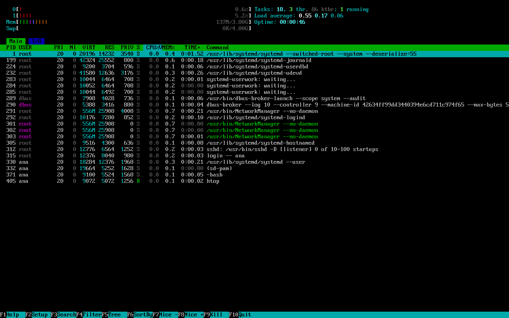

Arch ps, pgrep, top, htop
Todo programa em execução é um processo: o navegador, o terminal, o sshd que espera conexões, até o comando ls enquanto lista. Nesta aula você aprende a ver quais processos existem, achar um pelo nome e descobrir quanto cada um gasta. Encerrar o que travou é a aula seguinte, Encerrar Programas (kill).
- O que são PID, processo pai e estado de um processo.
- Listar processos com
ps aux,ps -efepgrep -a. - Acompanhar em tempo real com
topehtop. - Achar um processo pelo nome com
pgrepepidof, e o que significa quando nada aparece. - Deixar um processo pesado mais "gentil" com
niceerenice.
O que é um processo
Pense numa cozinha: a receita é o programa (o arquivo /usr/bin/sleep, parado no disco); o prato sendo feito é o processo. Você pode cozinhar a mesma receita três vezes ao mesmo tempo: são três processos do mesmo programa. Cada processo tem:
| Atributo | O que é |
|---|---|
| PID | Process ID: o número do processo, único enquanto ele vive. É por ele que você o encerra (veja kill). |
| PPID | Parent PID: quem o criou. Todo processo tem um pai; o avô de todos é o systemd, PID 1. |
| Dono | O usuário que o rodou. Você só pode encerrar os seus (o root pode todos). |
| Estado | Rodando, dormindo (esperando algo), parado… |
A árvore real da VM do guia, com pstree (do pacote psmisc), mostra essa família. Repare que tudo descende do systemd(1):
$ pstree -p | head -20
systemd(1)-+-NetworkManager(289)-+-{NetworkManager}(299) « {entre chaves} = threads do mesmo processo
| |-{NetworkManager}(300)
| `-{NetworkManager}(301)
|-agetty(313) « o "login:" do tty1
|-dbus-broker-lau(287)---dbus-broker(288)
|-nginx(1385)---nginx(1386)
|-polkitd(1282)-+-{polkitd}(1307)
| |-{polkitd}(1308)
| |-{polkitd}(1309)
| `-{polkitd}(1315)
|-snapperd(1183)
|-sshd(310)---sshd-session(1501)---sshd-session(1507)---bash(1508)---bash(1511)-+-head(1547)
| `-pstree(1546)
|-systemd(1014)---(sd-pam)(1016)
|-systemd(769)---(sd-pam)(772)
|-systemd-journal(196)
|-systemd-logind(290)
|-systemd-udevd(230)
`-systemd-userdbd(220)-+-systemd-userwor(1317)
|-systemd-userwor(1318)
Leia a linha do sshd: o servidor SSH (310) criou uma sessão (1501, 1507), que abriu um bash, que rodou o pstree e o head. É o caminho do próprio comando que gerou essa saída.
ps: a foto dos processos
ps sozinho
ps (process status) sem nada mostra só os processos do seu terminal:
$ ps
PID TTY TIME CMD
7592 pts/0 00:00:00 bash « o seu shell
7644 pts/0 00:00:00 ps « o próprio ps
TTY é o terminal (pts/0 = o primeiro pseudoterminal: uma janela de terminal ou uma conexão SSH); TIME é quanto tempo de processador ele já usou; CMD, o comando.
ps aux: todos os processos
- ps
- Lista processos.
- a
- all: de todos os usuários, não só os seus.
- u
- user: formato com o dono, uso de CPU e memória.
- x
- Inclui os processos sem terminal (serviços, que são a maioria).
As opções vão sem hífen: é o estilo BSD, herdado de outro Unix. O ps do Arch (pacote procps-ng) aceita os dois estilos.
$ ps aux | head -12 USER PID %CPU %MEM VSZ RSS TTY STAT START TIME COMMAND root 1 0.2 0.3 20708 14676 ? Ss 13:06 0:02 /usr/lib/systemd/systemd --switched-root --system --deserialize=54 root 2 0.0 0.0 0 0 ? S 13:06 0:00 [kthreadd] « [entre colchetes] = tarefa do kernel root 3 0.0 0.0 0 0 ? S 13:06 0:00 [pool_workqueue_release] root 4 0.0 0.0 0 0 ? I< 13:06 0:00 [kworker/R-rcu_gp] root 5 0.0 0.0 0 0 ? I< 13:06 0:00 [kworker/R-sync_wq] root 6 0.0 0.0 0 0 ? I< 13:06 0:00 [kworker/R-kvfree_rcu_reclaim] root 7 0.0 0.0 0 0 ? I< 13:06 0:00 [kworker/R-slub_flushwq] root 8 0.0 0.0 0 0 ? I< 13:06 0:00 [kworker/R-netns] root 10 0.1 0.0 0 0 ? I 13:06 0:01 [kworker/0:1-cgroup_offline] root 12 0.0 0.0 0 0 ? I 13:06 0:00 [kworker/u8:0-events_unbound] root 13 0.0 0.0 0 0 ? I 13:06 0:00 [kworker/u8:1-efi_runtime] $ ps aux | wc -l 113 « 112 processos + a linha de cabeçalho, numa VM sem interface gráfica
| Coluna | Significado |
|---|---|
USER | Dono do processo |
PID | Número do processo |
%CPU | Uso médio de processador desde que ele começou |
%MEM | Parte da memória RAM que ele ocupa |
VSZ | Memória virtual (KiB): tudo o que ele reservou, mesmo sem usar. Costuma assustar e não importa muito. |
RSS | Memória real (KiB) ocupada agora. É esta que conta. |
TTY | Terminal; ? = sem terminal (serviço) |
STAT | Estado (tabela abaixo) |
START / TIME | Hora em que começou / tempo de CPU acumulado |
COMMAND | O comando completo, com argumentos |
| STAT | Estado |
|---|---|
R | Running: usando o processador agora |
S | Sleeping: dormindo, esperando algo (tecla, rede, tempo). É o estado normal da maioria. |
D | Esperando o disco, sem poder ser interrompido. Muitos em D = disco lento ou travado. |
I | Idle: tarefa do kernel ociosa |
T | Parado (por Ctrl+Z ou pelo sinal STOP) |
Z | Zumbi: já terminou, mas o pai ainda não "recolheu" o resultado |
s l < + | Extras: líder de sessão, tem várias threads, prioridade alta, está em primeiro plano no terminal |
ps -ef: o mesmo, no estilo Unix
O outro estilo clássico, com hífen. -e = todos (every); -f = formato completo (full). A diferença útil: mostra o PPID (o pai).
$ ps -ef | head -8 UID PID PPID C STIME TTY TIME CMD root 1 0 0 13:06 ? 00:00:02 /usr/lib/systemd/systemd --switched-root --system --deserialize=54 root 2 0 0 13:06 ? 00:00:00 [kthreadd] root 3 2 0 13:06 ? 00:00:00 [pool_workqueue_release] « PPID 2: filho do kthreadd root 4 2 0 13:06 ? 00:00:00 [kworker/R-rcu_gp] root 5 2 0 13:06 ? 00:00:00 [kworker/R-sync_wq] root 6 2 0 13:06 ? 00:00:00 [kworker/R-kvfree_rcu_reclaim] root 7 2 0 13:06 ? 00:00:00 [kworker/R-slub_flushwq]
Escolher as colunas e ordenar
Com -o você escolhe as colunas; com -p, os PIDs; com --sort, a ordem (- antes = do maior para o menor). Os cinco que mais gastam memória na VM:
$ ps -eo pid,user,%mem,rss,comm --sort=-%mem | head -6
PID USER %MEM RSS COMMAND
289 root 0.7 28076 NetworkManager
196 root 0.6 25444 systemd-journal
1501 root 0.3 14788 sshd-session
1 root 0.3 14676 systemd
230 root 0.3 12648 systemd-udevd
$ ps -o pid,ppid,user,stat,etime,cmd -p 1,289,310
PID PPID USER STAT ELAPSED CMD
1 0 root Ss 20:43 /usr/lib/systemd/systemd --switched-root --system --deserialize=54
289 1 root Ssl 20:23 /usr/bin/NetworkManager --no-daemon
310 1 root Ss 20:21 sshd: /usr/bin/sshd -D [listener] 0 of 10-100 startups
ELAPSED (etime) é há quanto tempo o processo existe (minutos:segundos). Com ps -u ana você vê só os processos de um usuário.
pgrep: achar pelo nome
O jeito mais comum de procurar é ps aux | grep nome. Funciona, mas tem uma pegadinha: o próprio grep aparece no resultado.
$ ps aux | grep sshd root 310 0.0 0.2 12776 8660 ? Ss 13:06 0:00 sshd: /usr/bin/sshd -D [listener] 0 of 10-100 startups root 20369 0.0 0.3 21484 14624 ? Ss 13:25 0:00 sshd-session: root [postauth] … « (uma linha por conexão SSH aberta) ana 26573 0.0 0.2 21616 9196 ? S 13:27 0:00 sshd-session: ana@notty ana 26603 0.0 0.1 6968 4340 ? S 13:27 0:00 grep --color=auto sshd « o próprio grep!
O pgrep (process grep) foi feito para isso: procura pelo nome e devolve os PIDs, sem se incluir.
- pgrep
- Procura processos pelo nome.
- -a
- all: mostra o comando completo ao lado do PID. Sem ele, só os números.
- sshd
- Um pedaço do nome (é uma expressão regular, como no grep).
$ pgrep -a sshd
310 sshd: /usr/bin/sshd -D [listener] 0 of 10-100 startups « o servidor
1501 sshd-session: ana [postauth] « as conexões ("sshd-session" contém "sshd")
1507 sshd-session: ana@notty
$ pgrep -x sshd
310 « -x = nome exato: só o servidor
$ pgrep -l Network
289 NetworkManager « -l = PID e nome curto
"Não apareceu nada"
Se o pgrep não acha nada, ele não escreve nada. O único sinal é o código de saída:
$ pgrep -a firefox; echo $? 1 « 1 = nenhum processo com esse nome $ pgrep networkmanager; echo $? 1 « diferencia maiúsculas! $ pgrep -i networkmanager 289 « -i ignora maiúsculas/minúsculas
O Chromium roda como chrome; o Visual Studio Code, como code ou electron; um script Python aparece como python3. Quando pgrep nome volta vazio, procure na linha de comando inteira com -f (full): pgrep -af meu_script.py. E use -u ana para ver só os de um usuário.
Missão: há um sleep rodando em segundo plano. Mostre o PID dele e o comando completo com o pgrep.
top e htop: o filme dos processos
top
O ps é uma foto; o top é um filme: atualiza a cada 3 segundos e põe no alto quem mais gasta processador. Ele vem no procps-ng, instalado em todo Arch. Saia com q. Uma "foto" do top (com -b -n 1: modo texto, uma rodada só), tirada enquanto outro usuário instalava pacotes na VM:
$ top -b -n 1 | head -14
top - 13:22:31 up 16 min, 3 users, load average: 1,61, 0,53, 0,30
Tarefas: 126 total, 3 running, 122 sleep, 1 d-sleep, 0 stopped, 0 zombie
%CPU(s): 48,6 us, 37,1 sy, 0,0 ni, 0,0 id, 8,6 wa, 2,9 hi, 2,9 si, 0,0 st
MB mem : 3888,2 total, 3375,2 free, 506,5 used, 274,1 buff/cache
MB swap: 4096,0 total, 4096,0 free, 0,0 used. 3381,7 avail mem
PID USUARIO PR NI VIRT RES SHR S %CPU %MEM TEMPO+ COMANDO
8550 ana 20 0 97772 52744 17084 R 88,1 1,3 0:00.22 pacman « o "culpado" do momento
8121 ana 20 0 9744 7484 5544 R 19,6 0,2 0:00.19 makepkg
1 root 20 0 21384 15656 10808 S 0,0 0,4 0:04.33 systemd
2 root 20 0 0 0 0 S 0,0 0,0 0:00.00 kthreadd
3 root 20 0 0 0 0 S 0,0 0,0 0:00.00 pool_wo+
4 root 0 -20 0 0 0 I 0,0 0,0 0:00.00 kworker+
5 root 0 -20 0 0 0 I 0,0 0,0 0:00.00 kworker+
| Linha | O que diz |
|---|---|
up 16 min | Há quanto tempo o sistema está ligado |
load average: 1,61, 0,53, 0,30 | Carga média em 1, 5 e 15 minutos. Compare com o número de processadores (nproc = 2 na VM): acima disso, há fila. |
Tarefas: … 1 d-sleep … 0 zombie | Contagem por estado |
%CPU(s): … us, … sy, … id, … wa | Tempo em programas (user), no kernel (system), ocioso (idle) e esperando disco (wait). wa alto = gargalo de disco. |
MB mem / MB swap | Memória: o que importa é avail mem (disponível de verdade) |
PR / NI | Prioridade e nice (−20 = mais prioridade, 19 = menos) |
RES / SHR | Memória real / parte dela compartilhada com outros processos |
Dentro do top: M ordena por memória, P por CPU, k pede um PID para encerrar (o assunto de kill), q sai. Os números usam vírgula decimal porque o sistema está em português (LANG=pt_BR.UTF-8).
htop
O htop é um top mais amigável: cores, barras, rolagem, mouse e teclas de função. Ele não vem na instalação mínima: sudo pacman -S htop (na VM do guia ele já está instalado, versão 3.5.3). A tela abaixo é uma captura real da VM, em modo monocromático (htop -C) e com a janela pequena; no seu terminal as barras são coloridas:
$ htop
0[####*********** 35.3%] Tasks: 41, 14 thr, 104 kthr; 1 running
1[#** 5.4%] Load average: 5.41 2.58 1.16
Mem[|||#@$$$$$$$$$ 264M/3.80G] Uptime: 00:20:59
Swp[ 0K/4.00G]
[Main] [I/O]
PID USER PRI NI VIRT RES PRIV S CPU%▽MEM% TIME+ Command
27199 root 20 0 21360 14412 2076 D 2.2 0.4 0:00.02 sshd-session: ana [postauth]
20576 ana 20 0 4728 2768 232 S 1.1 0.1 0:00.03 dbus-broker --log 10 --controll
27163 ana 20 0 1786M 51880 0 D 1.1 1.3 0:00.02 podman run --rm docker.io/libra
27166 ana 20 0 8564 6272 824 R 1.1 0.2 0:00.04 htop -C -d 15 -n 2
1 root 20 0 21384 15736 4928 S 0.0 0.4 0:09.51 /usr/lib/systemd/systemd --swit
196 root 20 0 51972 26624 1068 S 0.0 0.7 0:01.22 /usr/lib/systemd/systemd-journa
220 root 20 0 9200 5756 600 S 0.0 0.1 0:00.08 /usr/lib/systemd/systemd-userdb
230 root 20 0 41480 12648 3172 S 0.0 0.3 0:00.54 /usr/lib/systemd/systemd-udevd
287 dbus 20 0 7908 4112 744 S 0.0 0.1 0:00.14 /usr/bin/dbus-broker-launch --s
289 root 20 0 412M 28108 3904 S 0.0 0.7 0:00.42 /usr/bin/NetworkManager --no-da

htop num console de verdade da VM (TTY), com as cores: barras de CPU e memória no alto, a lista de processos (a linha verde é a selecionada) e o menu de teclas F1…F10 embaixo. Captura real.| Parte da tela | O que mostra |
|---|---|
0[…] 1[…] | Uma barra por núcleo do processador (a VM tem 2). No terminal colorido, verde = programas, vermelho = kernel. |
Mem[…] / Swp[…] | Memória usada / total e swap. Aqui: 264 MiB de 3,8 GiB. |
Tasks, Load average, Uptime | Processos, threads (thr), tarefas do kernel (kthr), carga e tempo ligado |
[Main] [I/O] | Abas: processos ou uso de disco por processo (Tab troca) |
CPU%▽ | A seta marca a coluna da ordenação atual |
PRIV | Memória privada do processo (não compartilhada) |
Na última linha da tela fica a barra de teclas (ela não aparece na captura porque o htop foi encerrado sozinho com -n): F1 ajuda, F2 configurar, F3 buscar, F4 filtrar, F5 árvore (pais e filhos), F6 ordenar, F7/F8 prioridade, F9 encerrar (pergunta o sinal; veja kill), F10 ou q sair. Também dá para clicar nos cabeçalhos com o mouse.
Na VM, pacman -Qo mostra de onde cada ferramenta desta aula vem: ps, top, pgrep, pkill e pidof são do procps-ng; killall e pstree, do psmisc; o kill externo, do util-linux; o htop, do pacote htop.
E para encerrar um processo?
Agora que você sabe achar o PID e o nome de qualquer processo, o próximo passo é encerrar o que travou. Isso se faz mandando um sinal ao processo: kill PID (pelo número), pkill e killall (pelo nome), kill -9 quando o programa não obedece, e sudo systemctl stop para serviços. Tudo isso, com os sinais TERM, KILL, STOP e CONT explicados e as mensagens de erro reais, está na próxima aula: Encerrar Programas (kill).
Missão: liste todos os processos do sistema (de todos os usuários, com ou sem terminal), no estilo BSD ou no estilo Unix. Dica: junte com | head para ver só o começo, ou | wc -l para contar.
Missão: mostre só o PID do servidor SSH, o processo chamado exatamente sshd, sem as sshd-session das conexões. Use o pgrep com a opção de nome exato (ou o pidof).
Prioridade: nice e renice
Quando dois processos disputam o processador, ganha quem tem mais prioridade. O nice ("gentil") vai de −20 (egoísta) a 19 (gentil, deixa os outros passarem). Um usuário comum pode deixar o seu processo mais gentil, mas não voltar atrás:
$ sleep 300 &
[1] 26656
$ renice -n 10 -p $!
26656 (process ID) com prioridade antiga 0, prioridade nova 10
$ ps -o pid,ni,cmd -p $!
PID NI CMD
26656 10 sleep 300
$ renice -n 0 -p $!
renice: falha ao definir prioridade pra 26656 (process ID): Permissão negada « só o root diminui o nice
Para começar um programa já gentil: nice -n 19 makepkg. Bom para compilar algo do AUR sem travar o resto.
Formas diferentes de ver processos: qual usar?
| Quero… | Use | Por quê |
|---|---|---|
| Ver tudo o que está rodando, com dono e memória | ps aux | A "foto" mais completa; combine com | less ou | grep |
| Ver quem é pai de quem | ps -ef (coluna PPID) ou pstree -p | O pstree desenha a árvore |
| Achar o PID de um programa pelo nome | pgrep -a nome | Não se inclui no resultado, como o grep faz; -x, -f, -u refinam |
| Só o número, pelo nome exato | pidof nome | Saída curta, boa em scripts |
| Os que mais gastam memória | ps -eo pid,user,%mem,rss,comm --sort=-%mem | head | Colunas escolhidas e ordenadas |
| Descobrir quem está pesando agora | top ou htop | Atualizam sozinhos; o htop é mais fácil de usar |
Uma foto do top para guardar ou mandar num fórum | top -b -n 1 | head -20 | Modo texto (batch), uma rodada só |
Quando não funciona
$ pgrep -a firefox; echo $? 1 $ pidof firefox; echo $? 1
O que aconteceu: não há processo com esse nome. Silêncio + código 1 é o jeito de o pgrep e o pidof dizerem "não achei".
Como resolver: o programa pode estar fechado, ou o processo pode ter outro nome (um script Python aparece como python3). Tente pgrep -ai parte-do-nome (sem diferenciar maiúsculas) ou pgrep -af parte-do-comando (na linha de comando inteira).
ps aux | grep "acha" um processo que não existe
O que aconteceu: a linha encontrada é o próprio grep (grep --color=auto nome), que estava rodando no momento da foto. Veja o exemplo na seção do pgrep.
Como resolver: use pgrep -a nome, que nunca se inclui no resultado.
$ ps -p 99999; echo $?
PID TTY TIME CMD
1 « só o cabeçalho, e código 1
O que aconteceu: o processo já terminou (ou o número está errado). Os PIDs mudam a cada execução.
Como resolver: procure de novo com pgrep -a nome.
O que aconteceu: o htop não faz parte do base; só o top (pacote procps-ng) vem em toda instalação.
Como resolver: sudo pacman -S htop (veja pacman: o Básico), ou use o top.
O que aconteceu: olhe o wa do top e o estado D no ps: processos esperando o disco não aparecem como "gastando CPU", mas travam tudo. Pouca memória livre (avail mem baixo) e swap cheia também deixam tudo lento.
Como resolver: veja Quando o Sistema Trava. Se for um programa travado, encerre-o (kill).
Referência
| Comando | O que faz |
|---|---|
ps | Processos do terminal atual |
ps aux / ps -ef | Todos os processos (estilo BSD / Unix) |
ps -eo pid,user,%mem,comm --sort=-%mem | Colunas escolhidas, ordenadas |
ps -u ana · ps -p PID | De um usuário · de um PID |
pstree -p | Árvore de processos (psmisc) |
pgrep -a nome | PIDs e comandos que casam com o nome (-x exato, -f linha toda, -i sem caixa, -u usuário) |
pidof nome | PIDs de um programa pelo nome exato |
top · htop | Monitor em tempo real (q sai) |
pgrep -c nome | Só conta quantos processos casam |
nice -n 19 cmd · renice -n 10 -p PID | Prioridade baixa ao iniciar · depois |
Os comandos de encerrar (kill, pkill, killall) estão na referência de Encerrar Programas (kill).
Exercícios
1. Todos os processos
Complete o comando que lista todos os processos no estilo BSD, com dono e uso de memória:
2. Na linha de comando inteira
O seu script backup.py roda como python3 backup.py. Complete para achar o PID dele procurando na linha de comando inteira, com o comando completo ao lado:
3. Nome exato
Complete para listar só o processo chamado exatamente sshd (sem as sshd-session):
4. pgrep firefox não mostrou nada. O que isso quer dizer?
5. No ps aux, o que significa um D na coluna STAT?
6. O htop deu "comando não encontrado" num Arch recém-instalado. Por quê?
Resumo
- Processo = programa rodando; cada um tem PID, pai (PPID), dono e estado.
ps aux/ps -eftiram a foto;top/htopmostram o filme.pgrep -a nomeacha sem se incluir; resultado vazio = código 1.- No
top/htop, olhe a carga (load average), owa(disco) e oavail mem. nice/renicedeixam um processo pesado mais gentil.- Para encerrar o que travou: kill, pkill e killall.
Na Arch Wiki: as ferramentas desta aula aparecem em Core utilities (em português) e na lista de monitores em List of applications/Utilities; o htop tem página própria em Htop. Prioridade de processos está em Improving performance. Os pacotes: procps-ng e psmisc.